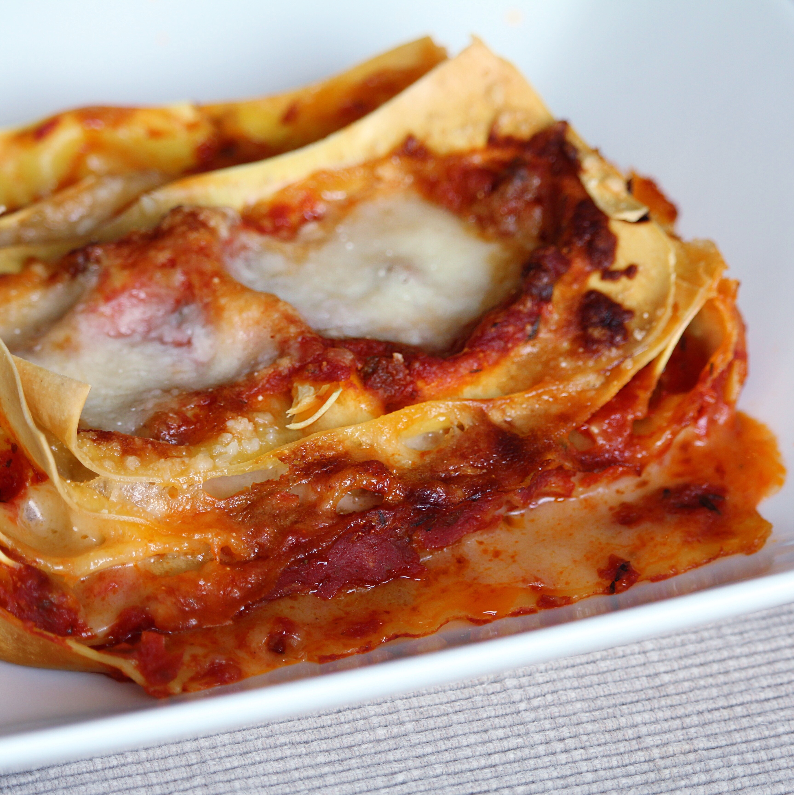

- Prep: 30 mins
- Cook: 2 hrs 48 mins
- Additional: 3 mins
- Total: 3 hrs 21 mins
- Servings: 8
- Yield: 8 servings
Ingredients
Bolognese Sauce:
- 2 tablespoons extra-virgin olive oil
- 1 small onion, chopped
- 1 carrot, chopped
- 1 shallot, minced
- 3 ½ ounces prosciutto, chopped
- 22 ounces ground beef
- 1 teaspoons ground nutmeg
- ½ teaspoon ground cinnamon
- salt to taste
- ¾ cup red wine
- 21 ounces peeled San Marzano tomatoes
White Sauce:
- ⅓ cup and ½ tablespoon and ½ teaspoon butter
- ⅔ cup all-purpose flour
- 3 ¼ cups milk
- ½ teaspoon ground nutmeg
- salt and ground black pepper to taste
Lasagna Layers:
- 11 ounces lasagna noodles
- 2 ½ cups grated Parmesan cheese, or to taste
Read Full Recipe